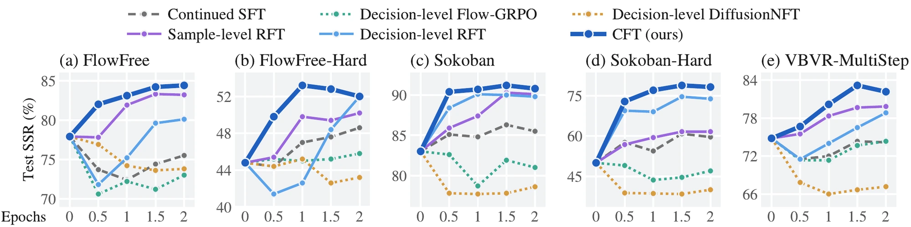
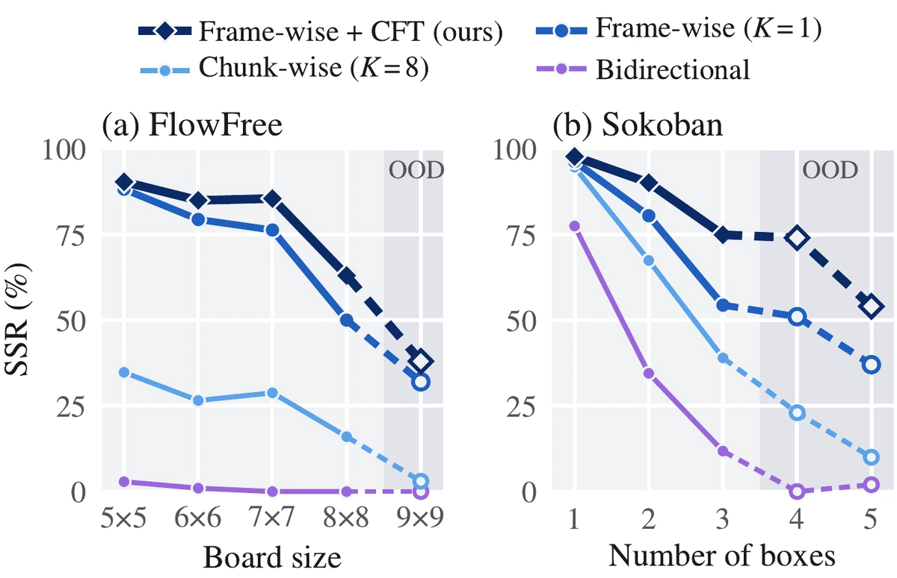
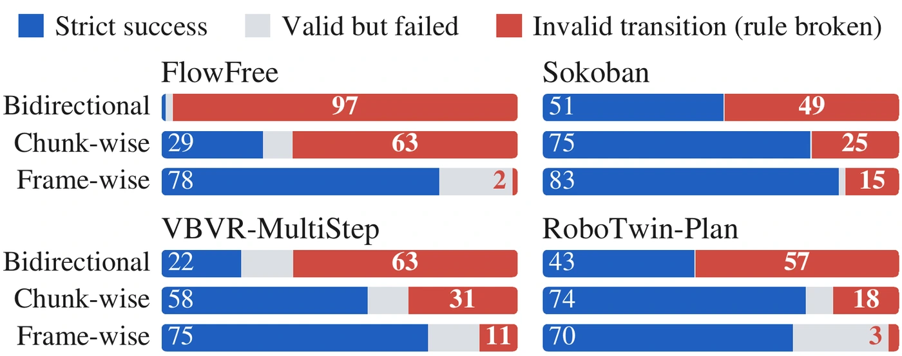
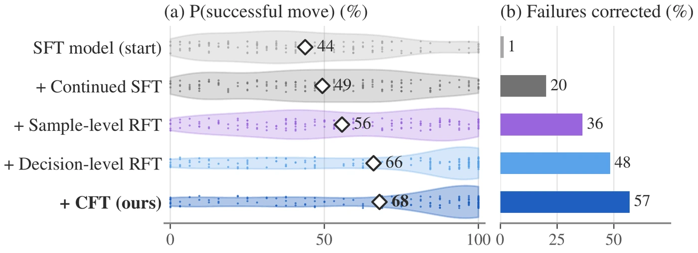
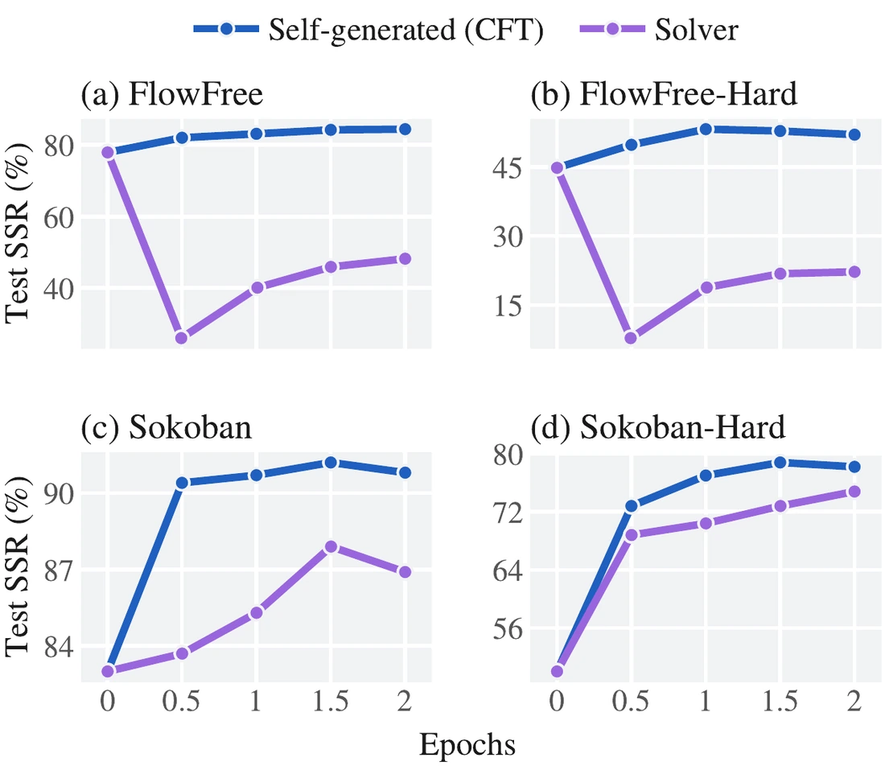
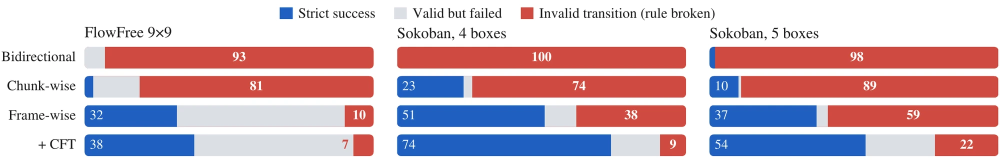
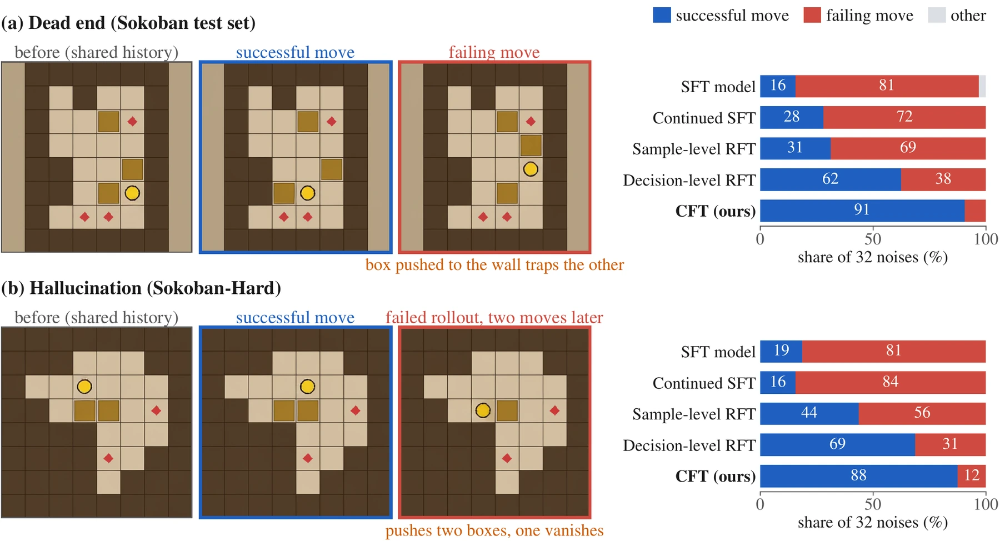

1S-Lab, Nanyang Technological University2KlingAI Research3CUHK
Current leading video generation models can synthesize highly realistic videos, while still frequently violating physical and logical constraints in multi-step reasoning and planning, even after training with large-scale reasoning data or existing diffusion RL methods. We attribute these failures to the conventional video training paradigm, which treats a solution as a fixed-length clip rather than a chain of decisions. We present ViDecide, a decision-centric framework that trains video diffusion models to predict state transitions causally and decide when to stop, with a decision-focused training schedule. We further propose Corrective Fine-tuning (CFT), which corrects failed decisions by mapping their noise to the model’s own successful continuations, achieving stable improvement without policy-gradient optimization. Across abstract games, planning tasks, and a new benchmark of multi-step robot planning, ViDecide achieves an average strict success rate of 83.8%, far above 23.3% for standard fine-tuning and 67.8% for the strongest prior method, and generalizes to larger puzzles and unseen layouts. Our framework therefore unlocks greater potential for video generation models as reliable reasoners and planners in the visual world.
VideoRLVR
Rule-based games, 1,000 test puzzles per game
VBVR-MultiStep
Six planning tasks, 100 test puzzles each
RoboTwin-Plan new
Dual-arm block planning, 700 test episodes
Strict success rate (SSR)
The share of test videos that
reach the goalandfollow the task rules at every state transition
A rule verifier replays every transition of the video, so a final frame that looks solved does not count by itself. On VBVR-MultiStep the solution must also be the shortest.
Design 1 · Generation paradigm
Bidirectional generation denoises all frames of a fixed-length clip together. ViDecide generates the video causally in segments of K latent frames, frame-wise (K = 1) or chunk-wise (K = 8), and stops at its own EOS frame. With the same data and backbone, this raises the average strict success rate by 48.2 points.
| Method | Wan2.2-5B fine-tuned | DiT-B from scratch | ||||
|---|---|---|---|---|---|---|
| FlowFree | Sokoban | VBVR-MultiStep | RoboTwin-Plan | FlowFree | Sokoban | |
| Zero-shot video generators† | ||||||
| Seedance 2.5‡ | 0.0 | 5.0 | 20.0 | 6.7 | – | – |
| Veo 3.1‡ | 0.0 | 5.0 | 0.0 | 0.0 | – | – |
| Wan2.2-5B | 0.0 | 0.0 | 0.0 | 0.0 | – | – |
| VBVR-Wan2.2-A14B | 0.0 | 0.0 | 11.3 | 0.0 | – | – |
| VBVR-Pro-Wan2.2-5B-RLVR | 0.0 | 0.0 | 7.7 | 0.0 | – | – |
| Fixed-length generation | ||||||
| Bidirectional | 1.1 | 50.8 | 22.3 | 42.6 | 0.0 | 8.8 |
| HDR | 11.6 | 45.9 | 24.0 | 63.9 | 0.4 | 10.3 |
| S2PD | 68.1 | 75.7 | 64.5 | 62.9 | 41.2 | 56.4 |
| Causal generation with adaptive termination | ||||||
| Ours (K = 8) | 28.5 | 75.0 | 57.8 | 73.9 | 5.8 | 18.3 |
| Ours (K = 1) | 77.9 | 83.0 | 74.8 | 70.1 | 58.6 | 73.8 |
†Judged with a relaxed criterion that accepts non-optimal solutions and minor errors after manual review.
‡Evaluated on 20–30 test samples per benchmark due to API cost.
Design 2 · Training schedule
The decision-focused schedule shifts training toward high noise levels, concentrating it on the decisions themselves. On RoboTwin-Plan, strict success rises from 33.3% with the default s = 5 of Wan2.2 to 73.9% with s = 10, likely because robot videos contain much more visual detail.
| Benchmark | s = 1 | s = 5 | s = 10 |
|---|---|---|---|
| Wan2.2-5B | |||
| FlowFree | 46.8 | 73.5 | 77.9 |
| Sokoban | 68.4 | 79.6 | 83.0 |
| VBVR-MultiStep | 44.0 | 70.3 | 74.8 |
| RoboTwin-Plan | 2.6 | 33.3 | 73.9 |
| DiT-B | |||
| FlowFree | 0.0 | 51.5 | 58.6 |
| Sokoban | 2.0 | 70.8 | 73.8 |
Design 3 · Post-training
All post-training methods start from the same SFT model and use the same training budget. CFT improves every benchmark, while Flow-GRPO and DiffusionNFT rarely improve the model, whether the reward is given to the whole video or to continuations branched at a failed decision.
| Method | Wan2.2-5B fine-tuned | DiT-B from scratch | ||||||||
|---|---|---|---|---|---|---|---|---|---|---|
| FlowFree | Sokoban | VBVR-MultiStep | RoboTwin-Plan | FlowFree | Sokoban | |||||
| Test | Hard | Test | Hard | Test | Test | Test | Hard | Test | Hard | |
| S2PD | 68.1 | 41.2 | 75.7 | 38.2 | 64.5 | 62.9 | 41.2 | 25.6 | 56.4 | 11.6 |
| SFT model (ours) | 77.9 | 44.8 | 83.0 | 50.0 | 74.8 | 73.9 | 58.6 | 24.4 | 73.8 | 32.8 |
| + Continued SFT | 75.5 | 48.6 | 85.5 | 59.6 | 74.2 | 74.3 | 55.8 | 34.4 | 74.1 | 42.4 |
| Reward on the whole video | ||||||||||
| + Flow-GRPO | 72.9 | 47.0 | 80.6 | 45.4 | 73.2 | 73.4 | 57.7 | 31.8 | 73.0 | 37.2 |
| + DiffusionNFT | 79.5 | 43.0 | 80.5 | 45.6 | 72.7 | 72.0 | 60.2 | 26.0 | 71.6 | 28.0 |
| + RFT | 83.2 | 50.2 | 90.1 | 61.6 | 79.8 | 77.9 | 60.7 | 30.8 | 77.9 | 43.2 |
| Reward on continuations from a failed decision | ||||||||||
| + Flow-GRPO | 73.0 | 45.8 | 81.0 | 47.0 | 74.3 | 75.0 | 57.0 | 31.0 | 74.1 | 39.0 |
| + DiffusionNFT | 73.8 | 43.2 | 78.6 | 40.0 | 67.2 | 63.3 | 61.4 | 25.0 | 72.8 | 28.6 |
| + RFT | 80.1 | 52.0 | 89.8 | 73.8 | 78.8 | 70.7 | 59.0 | 28.0 | 79.1 | 46.3 |
| + CFT (ours) | 84.4 | 52.0 | 90.8 | 78.2 | 82.2 | 78.0 | 65.6 | 27.2 | 79.6 | 48.3 |

Generalization
Every puzzle below lies outside the training range, with more boxes, a larger board, a longer plan or a layout never seen in training. Our models still solve many of them, which suggests that they learn transferable rules rather than only mimicking the training solutions.
| Method | Sokoban | FlowFree | RoboTwin-Plan | ||
|---|---|---|---|---|---|
| 4 boxes | 5 boxes | 9×9 | Blocks World 2×2 | Tower of Hanoi 2×2 | |
| Bidirectional | 0.0 | 2.0 | 0.0 | 14.0 | 16.0 |
| Ours (K = 8) | 23.0 | 10.0 | 3.0 | 36.0 | 18.0 |
| Ours (K = 1) | 51.0 | 37.0 | 32.0 | 4.0 | 2.0 |
| + CFT (ours) | 74.0 | 54.0 | 38.0 | 32.0 | 14.0 |

Generation paradigm
Each test video is categorized by its first error. Most failures of joint generation break a rule, and frame-wise causal generation removes most of them.

97% → 2%
FlowFree videos that break a rule,
bidirectional → frame-wise
98.2% vs 50.8%
bidirectional Sokoban videos,
reaching the goal vs. following every rule
Post-training
At 149 points where the SFT model failed on the Sokoban test sets,
CFT shifts the decision distribution toward successful decisions,
and the noise that caused the failure now often produces the successful decision.

44% → 68%
successful decisions over fresh noises,
SFT model → CFT
57%
noises that caused a failure,
now producing the successful decision
Self-generated corrections also work far better than corrections drawn by a solver, which cover more puzzles but lie outside the model’s own distribution.
84.4% vs 48.2%
FlowFree strict success,
self-generated vs. solver corrections
2.8×
as many FlowFree puzzles covered by solver corrections

| Method | FlowFree | FlowFree-Hard | Sokoban | Sokoban-Hard | ||||||||
|---|---|---|---|---|---|---|---|---|---|---|---|---|
| k=1 | k=2 | k=4 | k=1 | k=2 | k=4 | k=1 | k=2 | k=4 | k=1 | k=2 | k=4 | |
| SFT model (ours) | 77.9 | 90.8 | 96.1 | 44.8 | 59.4 | 72.2 | 83.0 | 88.7 | 92.0 | 50.0 | 64.2 | 73.8 |
| + Continued SFT | 75.5 | 89.6 | 94.6 | 48.6 | 60.4 | 73.4 | 85.5 | 90.3 | 93.2 | 59.6 | 73.0 | 82.2 |
| + Sample-level RFT | 83.2 | 92.9 | 96.6 | 50.2 | 63.0 | 76.6 | 90.1 | 93.1 | 94.8 | 61.6 | 75.2 | 83.4 |
| + Decision-level RFT | 80.1 | 91.7 | 96.6 | 52.0 | 67.2 | 80.0 | 89.8 | 94.0 | 96.2 | 73.8 | 83.4 | 88.0 |
| + CFT (ours) | 84.4 | 93.2 | 97.4 | 52.0 | 68.6 | 79.8 | 90.8 | 94.5 | 96.8 | 78.2 | 85.0 | 88.6 |
| Method | VBVR-MultiStep | RoboTwin-Plan | ||||
|---|---|---|---|---|---|---|
| k=1 | k=2 | k=4 | k=1 | k=2 | k=4 | |
| SFT model (ours) | 74.8 | 82.7 | 87.8 | 73.9 | 84.3 | 89.7 |
| + Continued SFT | 74.2 | 81.5 | 87.2 | 74.3 | 83.6 | 91.1 |
| + Sample-level RFT | 79.8 | 86.0 | 90.5 | 77.9 | 86.3 | 90.9 |
| + Decision-level RFT | 78.8 | 86.8 | 90.7 | 70.7 | 80.9 | 87.6 |
| + CFT (ours) | 82.2 | 87.5 | 91.3 | 78.0 | 85.9 | 90.7 |


| Method | Tower of Hanoi | Ordinal Number Sequence | Sliding Puzzle | Snake Routing | Sokoban | TSP Reward Collection |
|---|---|---|---|---|---|---|
| Bidirectional | 8.0 | 2.0 | 9.0 | 5.0 | 39.0 | 71.0 |
| HDR | 13.0 | 27.0 | 12.0 | 1.0 | 19.0 | 72.0 |
| S2PD | 21.0 | 94.0 | 52.0 | 70.0 | 64.0 | 86.0 |
| Ours (K = 1) | 37.0 | 97.0 | 61.0 | 86.0 | 75.0 | 93.0 |
| + CFT (ours) | 61.0 | 98.0 | 68.0 | 90.0 | 83.0 | 93.0 |
| Method | Blocks World | Tower of Hanoi | Color Sorting | |||
|---|---|---|---|---|---|---|
| Row | Triangle | Row | Triangle | Buffer | No buffer | |
| Bidirectional | 66.0 | 30.0 | 98.0 | 66.0 | 55.0 | 5.0 |
| HDR | 86.0 | 56.7 | 90.0 | 72.0 | 75.0 | 35.0 |
| S2PD | 79.0 | 46.3 | 92.0 | 84.0 | 80.0 | 54.0 |
| Ours (K = 8) | 85.0 | 64.0 | 98.0 | 74.0 | 90.0 | 64.0 |
| Ours (K = 1) | 75.0 | 50.7 | 100 | 88.0 | 96.0 | 74.0 |
@article{zhang2026videcide,
title = {ViDecide: Teaching Video Diffusion Models to Reason and Plan Step by Step},
author = {Zhang, Kaiwen and Gao, Yiming and Xiao, Zeqi and Wang, Xintao and Wan, Pengfei and Gai, Kun and Pan, Xingang},
journal = {arXiv preprint arXiv:2611.26389},
year = {2026}
}